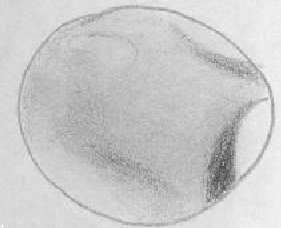

SJAA
Ephemeris
|
SJAA Ephemeris |
The Shallow SkyAkkana Peck |
Mars dominates the late night sky in April, reaching opposition on the 24th. This is the closest the planet will get to us this year; its disk extends 16", only a little smaller than we typically see Saturn's disk. It will be visible most of the night, at magnitude -1.6 far outshining nearby Spica.
It's still summer on the Martian hemisphere pointed toward us (the northern). The north polar cap has been reported to be unusually small this year, even earlier in the season; it may be difficult to see at all by opposition. Be careful you don't mistake the bright desert area Hellas for a polar cap.
The Sky & Telescope software site, http://www.skypub.com/resources/software/basic/basic.html has a free Windows program called "Mars Previewer" (scroll down to the bottom of the page) which makes it easy to tell which features are rotated toward us at any given time and date. Some planetarium programs also offer correctly-rotated Mars views, including GUIDE, Starry Night, and the freeware Unix program (maybe also available for other platforms?) XEphem.
Dark features visible should include Syrtis Major (a fairly easy feature which looks rather like India), and possibly Sinus Meridianus and Solis Lacus, the "Eye of Mars", which I found difficult to see in the last Mars apparition.
I'm collecting a list of links and observing information related to Mars, which I'll put on the Shallow Sky site at: http://www.shallowsky.com/mars.html
Meanwhile, as the red planet rises, the other naked-eye planets share the twilight. Bright Venus (magnitude -4) dominates the western sky at sunset. To a telescope it will show a gibbous phase all month. Saturn sits well below Venus; early April is the last month to see the rings in the evening before Saturn reaches conjunction with the sun on the 27th. Jupiter reaches conjunction on April 1, and will not be observable this month. Mercury, too, is lost in the Sun's glare during April and May.
Pluto is in Ophiuchus, high in the southeast after midnight. Uranus and Neptune are in the early dawn sky, in Capricornus.
|  |
| Akkana Peck; last updated: February 05, 2002 | Prev Next |